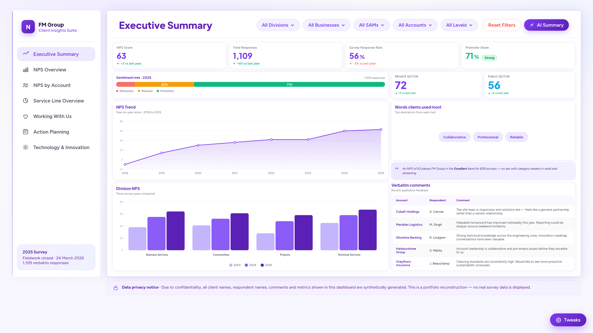

A facilities management business was collecting thousands of NPS survey responses each year across 411 client accounts with no way to act on them at scale. I built an end-to-end intelligence platform on Microsoft Fabric, GPT-4o to surface verbatim insights contract by contract, Power BI to close the loop with 877 tracked action plans, driving the business from NPS -10 in 2018 to a sector-leading 63 in 2025.
Built as a Power BI-style interactive report with Row Level Security, each viewer sees only their accounts, leadership sees the full portfolio. Click any tab to explore each page.

🏆 This platform received an internal award for innovation in data-driven service improvement.
Technical Services is dragging the whole portfolio by an estimated 11 NPS points
Business Services sits at NPS 80, Communities at 71. Technical Services sits at 11, 52 points below the next division and well below the FM sector average. If it matched the cross-division average, overall NPS would reach ~74.
TS detractor rate: 38% vs 4–10% across other divisions14 accounts generate 58% of all negative responses, this is a targeted problem, not a portfolio-wide one
Every one of these 14 accounts sits in Technical Services or Projects. All share a common pattern: no completed action plan in the prior 12-month cycle. The GPT-4o summaries flagged recurring phrases: "same issues raised last year" and "promised but not delivered."
Resolving these 14 accounts adds ~4 NPS pointsPassives are the single largest untapped growth lever, converting half adds ~7 NPS points
22% of respondents scored 7 or 8. GPT-4o verbatim analysis showed these clients are not at churn risk, they're satisfied but not advocating. The dominant theme was "good service, poor communication," cited in 41% of passive comments.
Converting 50% of passives to promoters → NPS ~70Accounts with 3+ completed actions score 33 points higher on average, but 32% of at-risk accounts have no plan
The data shows a clear link between structured follow-up and client sentiment. Accounts with 3+ completed actions averaged NPS 61. Accounts with no plan at all averaged 28. The 32% gap is the next phase of the programme.
9-point average lift per action plan cycle completed1,109 open-text responses summarised automatically, account managers read a 5-bullet AI brief per client, not raw feedback
Before the platform, verbatim feedback sat unread in spreadsheets. The GPT-4o pipeline grouped responses by contract, extracted themes, and wrote each summary in under 2 seconds. Zero manual reading. Zero data science intermediation.
Top customer words: Collaborative · Professional · ReliableFrom detractor territory in 2018 to sector-leading in 2025, but the biggest lever for growth remains untouched
The business moved from NPS -10 in 2018 to 63 in 2025, a 73-point improvement. NPS 63 sits 25 points above the FM sector average of ~38. The ceiling is ~74 if Technical Services reaches division average, a reachable target within two survey cycles.
FM sector average ~38 · top quartile ~55 · this business: 63Row Level Security: Two-tier RLS, Azure Data group layer for account isolation, and Power BI semantic model for SAM / MD / director hierarchy. Defined once; applied across all report tabs automatically.
GPT-4o Summarisation: PySpark grouped verbatim responses by contract, called Azure OpenAI API with a fixed system prompt (business analyst persona, max 5 bullets, temperature = 0). Results written back to Lakehouse and surfaced directly in Power BI.